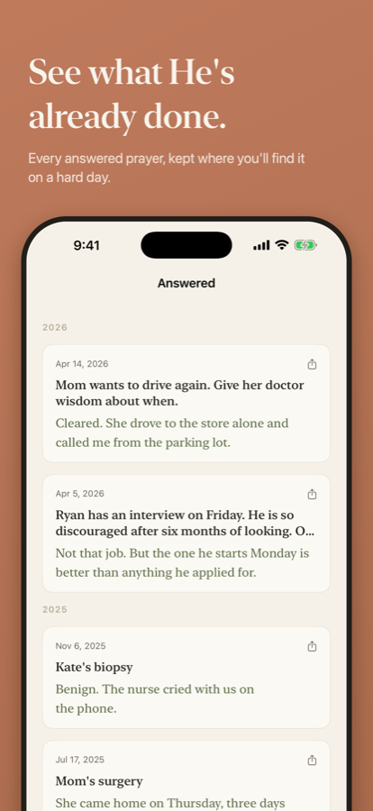
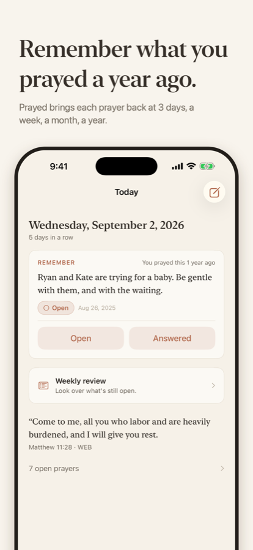

See what He's already done. Prayed brings each prayer back over time, matches scripture on your phone, and never sends your words anywhere.


Most journals hold what you wrote. Prayed hands it back to you when it matters.
Prayed brings prayers back at three days, a week, two weeks, a month, three, six, a year, two years. A daily Remember card and a weekly review of everything still open keep you from losing track of what you've carried.
After you save a prayer, Prayed finds three verses that speak to what you wrote, from the full text of the World English Bible or the King James Version. It runs entirely on the device and works in airplane mode.
Mark each prayer as it moves. The answered ones build into a timeline you'll want to scroll through on a hard day.
Tag a person or a thing, and every prayer for them gathers in one place, from the first ask to the answer. Every prayer for Mom, together.
There is no Prayed server and no account. Everything you write stays on your device and, if you choose, in your own iCloud.
No analytics, no tracking, no third-party code. Face ID lock is on by default.The quiet details.
No cap on prayers, ever. Prayed Plus remembers your whole history.
Cancel anytime in Settings. Your prayers stay on your device either way. Payment is charged to your Apple Account at confirmation of purchase; the subscription renews automatically unless cancelled at least 24 hours before the end of the current period. See the Terms of Use and Privacy Policy.